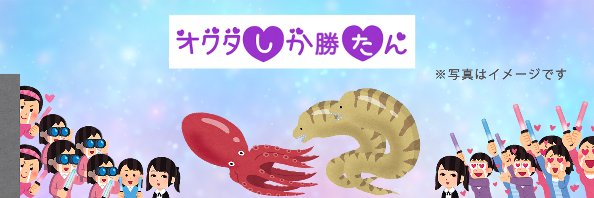

<!DOCTYPE HTML>
<html lang="ja">
    <head>
    <meta charset="UTF-8">
    <title>YUNA MICHIDA PORTFOLIO</title>
    <meta name="description" content="YUNA MICHIDA ポートフォリオ">
    <meta name="viewport" content="width=device-width,initial-scale=1">

        <!-- CSS -->
        <link rel="stylesheet" href="https://unpkg.com/ress/dist/ress.min.css">
        <link href="https://fonts.googleapis.com/css2?family=Montserrat:wght@400;700&display=swap" rel="stylesheet">
        <link href="../../css/style.css" rel="stylesheet">
        <link rel="shortcut icon" href="../../images/favicon.png">
    </head>

    <body>
       <!--　ヘッダー　-->
        <header class="header ">
            <div class="inner">
                <h1 class="header-logo">
                    <a>YUNA MICHIDA</a>
                </h1>
                <nav>
                    <ul class="header-nav">
                        <li><a href="../../portfolio.html">TOP PAGE</a></li>      
                    </ul>
                </nav>
            </div>
        </header>
        <!-- main --> 
        <main>
            <article>
                    <h2 class="work-page-title">twitterヘッダー依頼</h2>
                    <div class="work-content">
                        
                    </div>

                <div class="work-comment">
                    <h3 class="title-border">クライアント情報</h3>
                    <p>
                        年齢：20代前半　性別：女性　好きなアニメ：ツイステッドワンダーランド
                    </p> 
                    <h3 class="title-border">希望イメージ</h3>
                    <p>
                        アニメのキャラ設定でタコとウツボがイメージになっている<br>
                        素材屋のもので全て作って欲しい<br>
                        背景は夢かわな雰囲気<br>
                        オタクやメンヘラが騒いでいる
                    </p>
                    <h3 class="title-border">好きなテーマやカラー</h3>
                    <p>ピンク、紫</p>
                    <h3 class="title-border">使用したいキャッチコピー</h3>
                    <p>※これはイメージです<br>
                        オクタしか勝たん
                    </p>
                    <h3 class="title-border">デザインへの落とし込み</h3>
                    <p>クライアントの要望を聞き、ギャグっぽいネット民的なイメージ<br>
                        メンヘラ感女子な感じをフォントで表す。カラーは紫を使用し<br>
                        病み感を演出。背景のヲタクを沢山配置することで騒いでる雰囲気に<br>
                    </p>
                </div>
            </article>       
        </main>    
    </body>
</html>    
